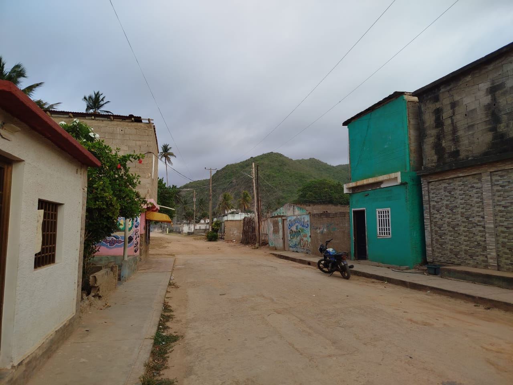
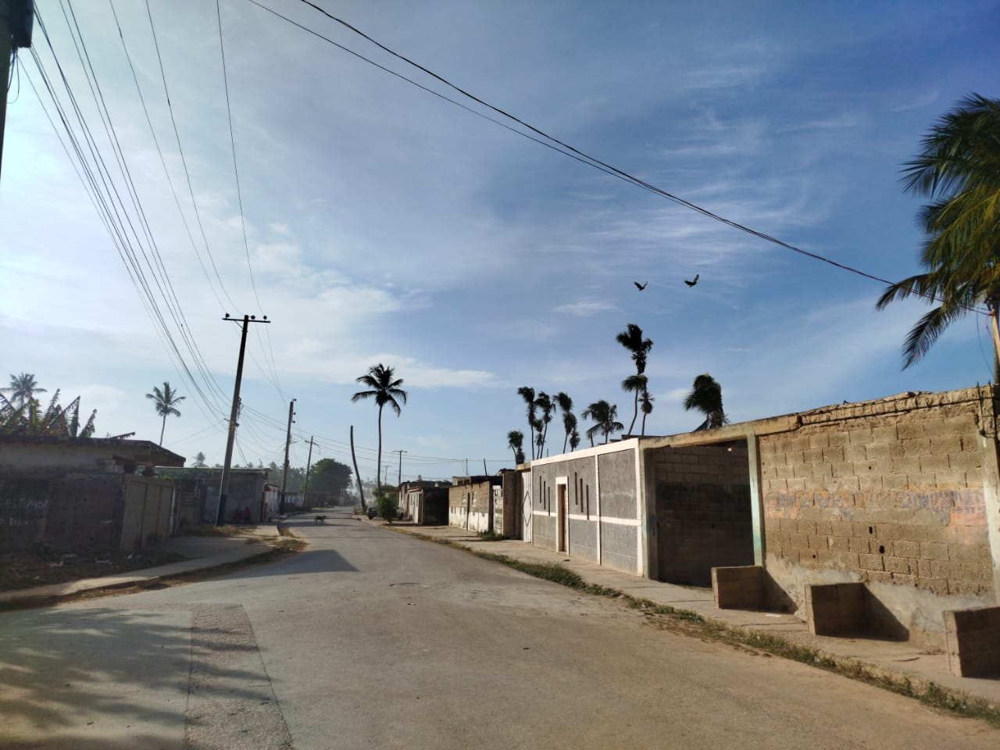
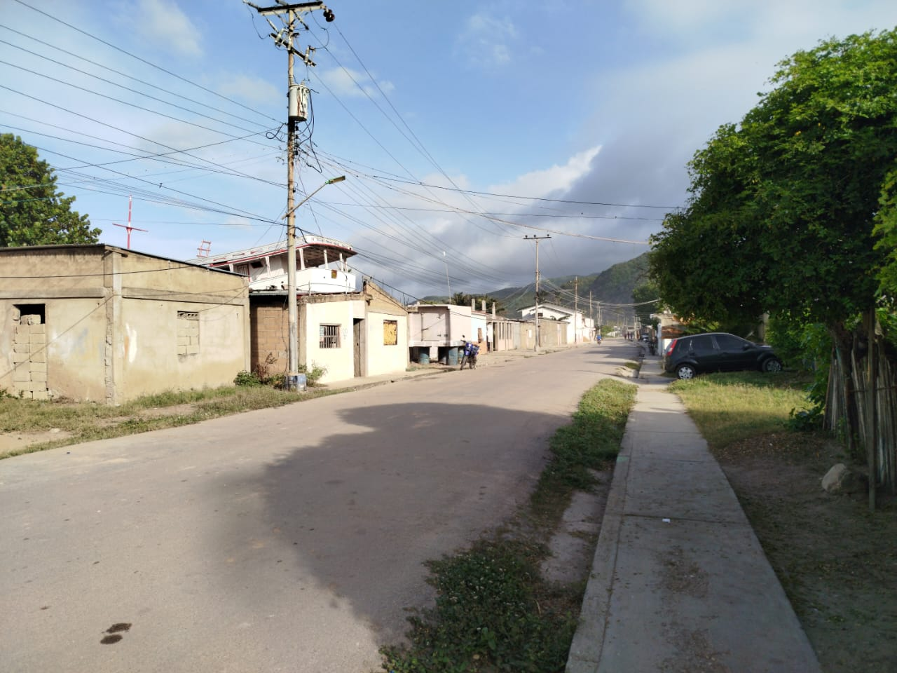
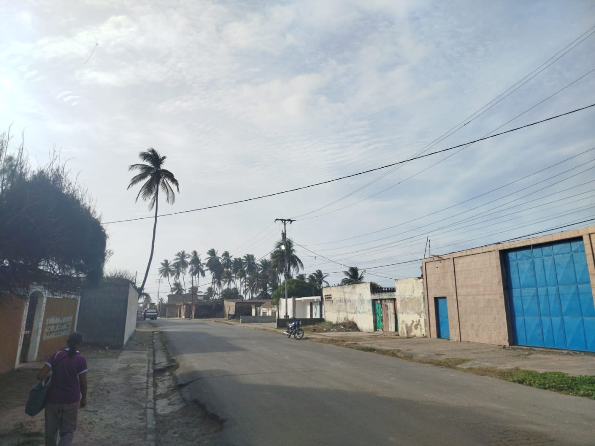

Este sector es uno de los más conocidos y visitados del pueblo, gracias a sus hermosas playas adornadas con altas palmeras de coco que crean un paisaje tropical único. La brisa del mar y la sombra natural de las palmeras lo convierten en un lugar ideal para disfrutar de la naturaleza y el ambiente costero. Además, cuenta con churuatas que brindan espacios de descanso tanto para los habitantes como para los visitantes, permitiendo compartir momentos de recreación, reuniones familiares y actividades al aire libre. Por su belleza natural y su ambiente acogedor, Los Cocos es considerado uno de los sitios más relevantes y atractivos de El Morro de Puerto Santo.



